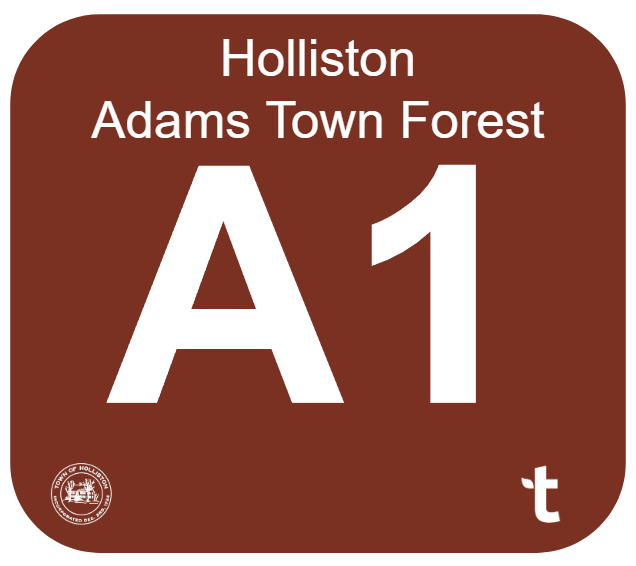
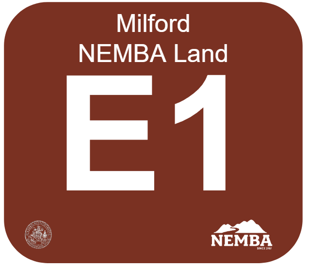
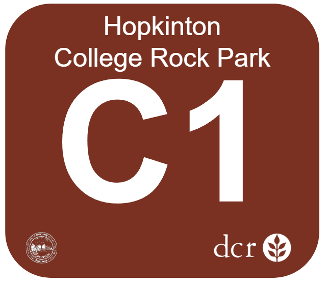

Holliston, Hopkinton & Milford, Massachusetts
Explore all trails and numbered intersections. Click any marker to see owner, town, and zone information.
Open MapIntersections organized by zone (A through F), showing which landowners are in each zone.
View ZonesAll public and private landowners and which intersections fall on their parcels.
View OwnersThe Holliston Town Forest Committee is developing a wayfinding sign system for trail intersections in the forest area spanning Holliston, Milford, and Hopkinton. The network is commonly known as the “Vietnam Trail Network” or the “Upper Charles” trails.
This project is a collaboration with the Holliston Conservation Commission, The Trustees of Reservations, the New England Mountain Bike Association, the Hopkinton Trails Committee, and the Milford Conservation Commission.
The full area is divided into 6 regions spanning across three towns. The regions are broken up by how they feel connected in the woods — they are loosely based on actual parcels in the area, but not a 1-to-1 matchup. The regions do not adhere to town boundaries either, so some regions span multiple towns. Every sign is in exactly one town and exactly one region.
Several non-town organizations have overlapping concerns in the area, including The Trustees of Reservations, New England Mountain Bike Association, and DCR. Signs that fall on an organization’s parcel will carry that organization’s logo or name, so each sign accurately reflects who manages the land it stands on.
As we reach out to private parcel owners whose land the trail network crosses, we will offer them the option to add a small image or logo to the corner of the signs on their parcels.
| Zone | Name | Towns |
|---|---|---|
| A | Adams Town Forest | Holliston |
| B | Beaver Brook Woods | Milford, Holliston |
| C | College Rock Park | Hopkinton, Holliston, Milford |
| D | Rocky Woods | Holliston, Milford |
| E | NEMBA Land | Milford, Holliston |
| F | Fairbanks | Holliston, Milford |
Each intersection will have a sign with the following elements:
Sample signs:



Kiosks at major entry points will have a full map of the area, a description of the signage system, and descriptions and logos for all towns and organizations represented. Entry points include:
Holliston public land is classified into three categories based on deed records:
See the Owner Report for the full breakdown of all public and private parcels the trail network crosses.
This project is led by the Holliston Town Forest Committee. If you have questions or comments, please email townforest@holliston.k12.ma.us.
OpenStreetMap (trails), MassGIS (parcels), Holliston assessor records via Tyler/iasWorld (deed research).